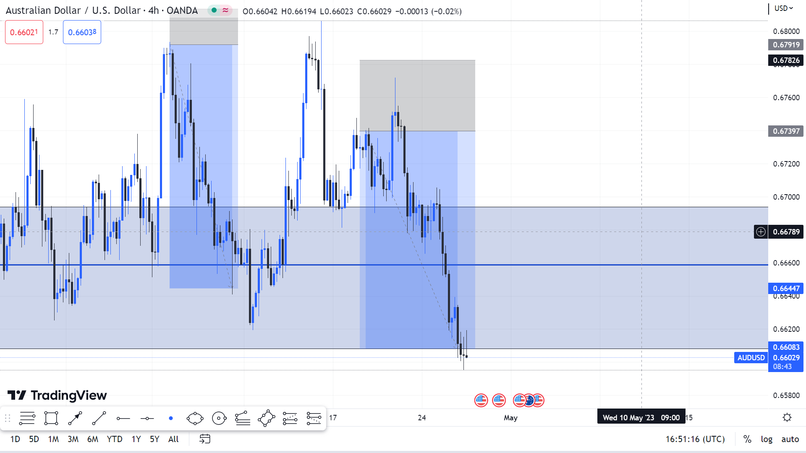
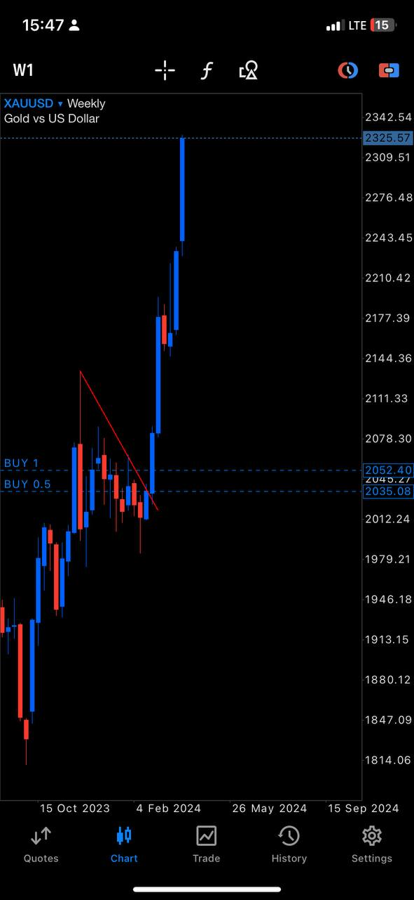
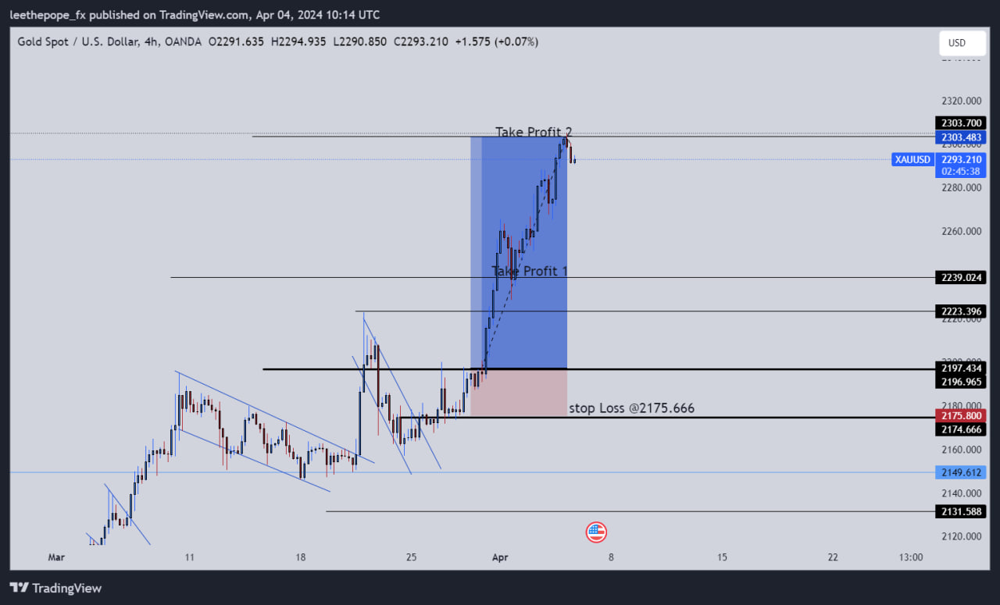

This is where the big money is going to be made
We are going to be making money but most importantly, we are going to be leaving Impact
So, the Pope's forex Cathedral is a forex trading organisation that focuses on training young traders to become profitable. Forex trading over the years have proven to be very complicated and people find difficult to thrive in this field so Pope has made it his business to train anyone who is interested in becoming one of the greatest forex traders.
At the Pope's fx cathedral, impact is our number one priority. This is to say that the impact comes before the money.
So,Pope's main goal is to help people both male and female traders make money by teaching them how to trade and above all, Pope wants to raise financial giants. Pope's wants to make financial literacy and financial freedom the main goal of the upcoming generation. We live in a country where people do not value financial education and it is really eating us up as a country and a generation. So Pope wants to help in teaching people financial literacy and its benefits through Forex Trading.
The simple answer is yes.
Pope has been doing this for the past three years and he has been able to raise about 70 students
and he still has some that are undergoing training and they are also going to be doing wonders very soon. When it comes to his accuracy,
he is one of the best. His projections are very solid and he is right nine out of ten times.
He believes in his system so strongly that
He doesn't care when things are not going well for other traders.
Below are some images to back what ever this site is saying about our forex Pope take your time to go through them and see things for yourself. Pope is not the type of guy that likes talking he likes proving his points by showing actions only.


These are just some of the things Pope has done on the charts he has a lot of his records on his telegram page.
Pope offers services like:
The pope has his Mentorship progam structured to take individuals from the complete beginner stage to advance level in technical analyis after that we have a top up programm for the fundamental analysis.
Yes!
Pope has telegram groups where he share his signals and other important information about
the forex market for free.
To access his free telegram group, use the link below.
take me thereIf you want to reach Pope Privately for more enquiries, kindly use the link provided below it will take you to his telegram inbox where you can have all the conversations with him there.
Get me to Pope